A long time ago, when there were no Kanji yet, the Chinese emperor used to fortune-telling with the bones of the shell of a turtle and the bones of a cow. However, the results could not be recorded. Because there were no letters. If you can not record, someone has to remember the results of fortune-telling forever. It isn’t inconvenience, so they become to use the characters which are simplified. These are the first Kanji, “Oracle bone script”. Let’s take a look at those characters which have similar shapes to the original pictures.
“木 (Tree)” is from the picture of a trunkThe origin of “火 (Fire)”The origin of “山 (Mountain)”The picture of the river is the origin of “水 (Water)”The origin of “人 (Person)”
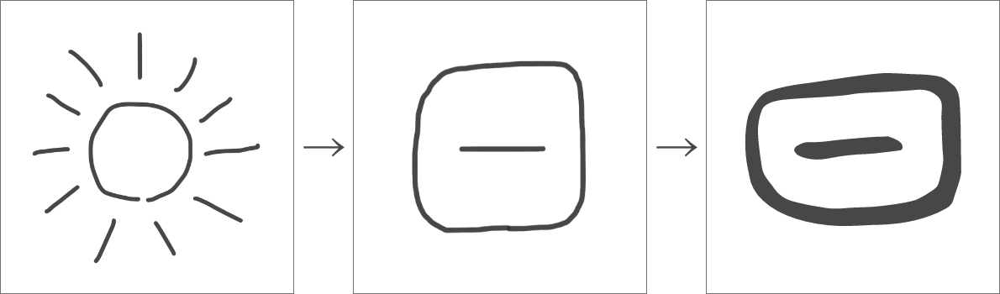
The origin of “日 (Sun)”
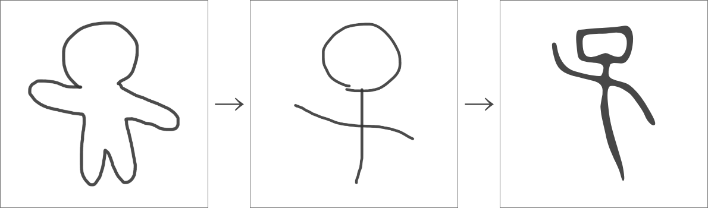
The origin of “子 (Child)”
World Hieroglyphs
In China, Oracle bone scripts were created, but in the world, various hieroglyphs were created. I would like to introduce one of them. It is a “Wedge-shaped character”. Wedge-shaped characters are the characters made by the Sumerians who lived in Iraq and Syria today.
The origin of the Wedge-shaped character “Water”The origin of the Wedge-shaped character “Cow”
In this way, it is shaped like a wedge. Like the Oracle bone scripts, there were initially made from pictures.
Now they could become to record the result on the bon used for fortune-telling. However, if it goes like this, it is not possible to create characters which represent invisible things. This is like “Top”, “Middle” and “Bottom” etc. When recording the result of fortune-telling, they sometimes used the expressions like “Top”, “Middle” and “Bottom” etc. same as the current sentences. Therefore, “Simple ideograms (Shiji-moji)” was added to the Oracle bone scripts.
The origin of “上 (Top)”
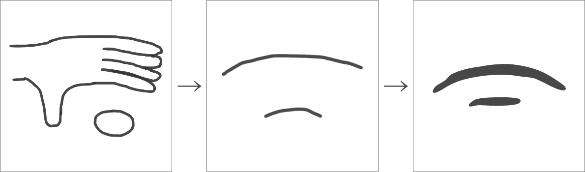
The origin of “下 (Bottom)”“中 (Middle)” was made from a picture of a military flag
Since “上 (Top)” and “下 (Bottom)” were confused with “二 (Two)”, a vertical bar was added later.
Increase characters with the Puzzle
The number of Kanji has increased considerably. But still not enough. Actually, many of the Kanji used today are neither hieroglyphs nor simple ideograms. Next, instead of making letters from pictures, antient people made Kanji by combining existing letters like a puzzle.
The Kanji created in this way are called “Ideographs”. Ideographs are characters that have new meanings of two or three characters.
They were made like a “森 (Forest)” with many “木 (Tree)”, and like a “休 (Rest)” with resting “人 (Person)” next to a “木 (Tree)”.
The origin of “森 (Forest)”
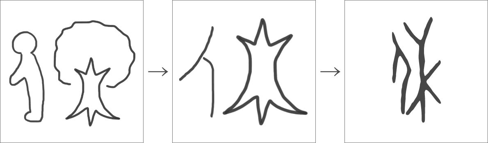
The origin of “休 (To rest)”The lid and container fit (合) togetherThe origin of “炎 (Flame)”“見 (To look)” explains the person who has a big eye
In the period using Kanji in the various places
Then, this completes the “Oracle bone script”, “Hieroglyphs”, “Simple ideograms” and “Ideographs”. The oracle bone scripts were used for about 400 years, but by the time “Kinbun” was used, they were used not only for fortune-telling but also for other things. Then, the existing characters would not be enough. And what was made is “Phonetic characters”. It was created by combining the Kanji characters that represent meaning and Kanji characters that represent sound. The reading is the same as the characters for sound, but there are two ways to add meaning. One is to give the same meaning as the character that expresses the meaning, and the other is to add the meaning by mixing the meanings of both the character that expresses the sound and the character that expresses the meaning. Phonetic characters were made by this way.
For example, “銅 (Copper)” has a meaning that is “金属 (metal)” called “do-u (Pronunciation of 同)”, “晴 (Sunny)” is called “se-i (Pronunciation of 青)” and has a meaning that is the weather when the sky is blue with the sun(日) is appeared.
The origin of “銅 (Copper)”The origin of “晴 (Sunny)”The origin of “草 (Grass)”The origin of “味 (Flavor)”
Easier to write
At this point, the characters are finally complete. However, there were still characters like pictures, so it was difficult to write a lot of characters quickly. Therefore, various ideas have been made to make it easier to write the characters. How has it changed to make is easier to write.
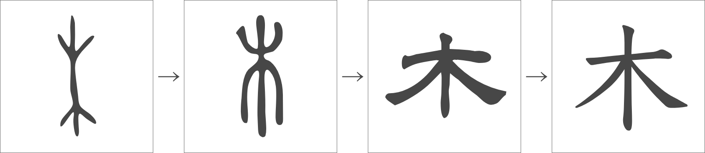
Change of “木 (Tree)”
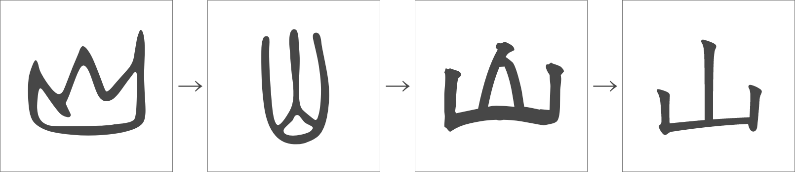
Change of “山 (Mountain)”Change of “手 (Hand)”
First, the number of strokes were reduced by connecting or disconnecting the strokes, and it came to be called “seal script”. Next, the curves were reduced and straightened, and the lines became round. This is a “clerical script”. And the round shape of the clerical scripts became square, and the line became straighter. This is the Kanji’s writing method that is currently used, “Block Script”. Unlike Hiragana and the alphabet, the reason why Kanji are squishy is to make them easier to write even with a brush that is difficult to draw curves.
Ingenuity of wedge-shaped characters
Wedge-shaped characters were also devised to make them easier to write. Wedge-shaped characters were written by scratching clay with a sharp stick, so the picture became straight same as Kanji.
Kanji and their styles of handwriting
There are a lot of styles of handwriting in the alphabet which are used English, etc., and also Kanji has a lot of styles of handwriting.
Block Script
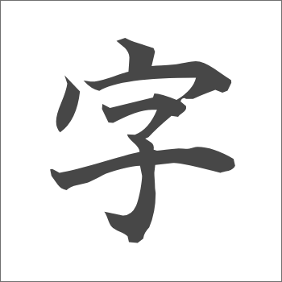
This is a commonly seen script seen on the textbook and pc. Basically, it is careful written about “Tome”, “Hane”, and “Harai”, which are the basics of Kanji. It is easy for anyone to see and is widely used.
Running Script
This is a script that is a slightly broken version of the Block Script. The feature is that it is written in a flowing manner, conscious of the movement of the brush. It is fast and easy to write, and you can see that it is often used in the old sentences. Some are omitted, but if you know the Block Script, you can read and write to some extent.
Cursive Script
It is further broken from the Running Script, and the characters are largely omitted. It’s broken down a lot, and the abbreviations are often different for each character, so it’s difficult to read or write without remembering the shape.
These are examples of scripts that are still used. In addition, various scripts are used depending on when and where Kanji is used, such as the seal script are used for stamps.
There are parts in Kanji
Unlike Hiragana and Katakana, Kanji has some parts. For example, the characters “漢 (Han)” and “流 (Flow)” have three dots on the left side. This is called “San-zui”. Also, “字 (Character)” and the Univers(宇宙)’s “宇 (u)” have the shape like Katakana’s “ウ (u)” on the top. This is called “u-kanmuri”. Right now, I’ve taken the Kanji “流” and “宇” as examples, but I think you can find many other Kanji that have the same shape. In Kanji, the meaning is given and the sound (reading) is decided based on this part. These are the “ideographs” and “phonetic characters” explained in the history part on this website. As you can see, there are many parts in Kanji. It may be easier to remember Kanji as you learn the parts.
The left-side part and the right-side part
From now on, I will explain the parts of Kanji. First, let’s break down the Kanji into some parts. There are various ways to divide it, but most of the characters are divided into left and right, so let’s divide the characters on the left and right. The separated parts on the left side are called “Hen”, and the parts on the right side are called “Tsukuri”. The characters which have same “Hen” almost have the meanings about the same thing, and the characters which have same “Tsukuri” almost have the same sound.
For example…
“桜 (Cherry blossoms)”, “株 (Stump)” and “植 (To plant)” have same “木 (Tree)” on the left-side, so these are the Kanji about “木 (Tree)”.
“江 (Big river)”, “紅 (Crimson)” and “虹 (Rainbow)” have same “工” on the right-side, so their sound is “工 (Kou)”.
Next, here are some examples about “Hen” and “Tsukuri” which are simple and used a lot.
Hen
San-zui
It is in the characters about the places which have water and the features of water.
Nin-ben
It is in the characters about a human and the behavior of the human.
Te-hen
It is in the characters about a hand and behavior of the hand.
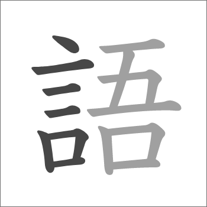
Gon-ben
It is in the characters about the words and speaking.
Ki-hen
It is in the characters about trees, grasses and things made of wood.
Ito-hen
It is in the characters about the threads and the cloths.
Tsukuri
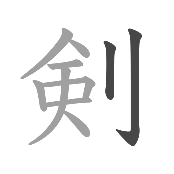
Rittou
It is in the characters about a sword and cutting movements.
Ogai
It is in the characters about a face.
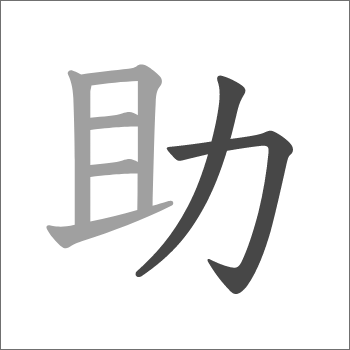
Chikara
It is in the characters about movements that use the power.
Ozato
It is in the characters about the areas and the villages.
How to divide various Kanji
In the explanation of how to make it, I wrote that Kanji are often divided into left and right, but there are many other ways to divide them. For example, when it is divided into upper and lower parts, it is called “Kanmuri (Crown)” and “Ashi (Foot)”. There are several other names, so you may have heard of them.
Hen
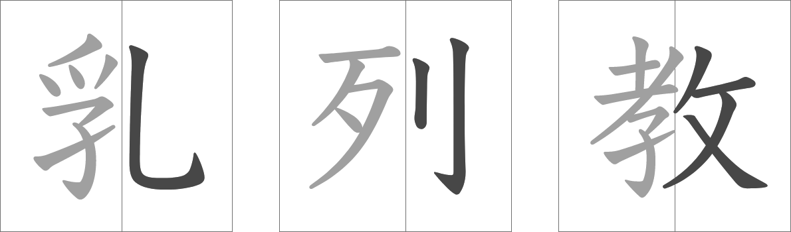
Tsukuri
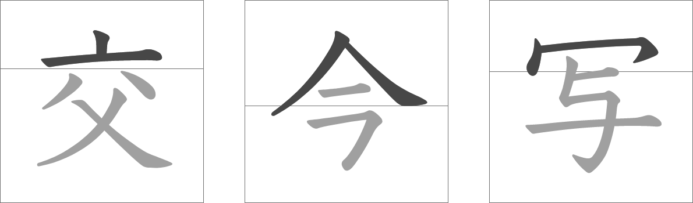
Kanmuri (Crown)Ashi (Foot)TareNyouKamae